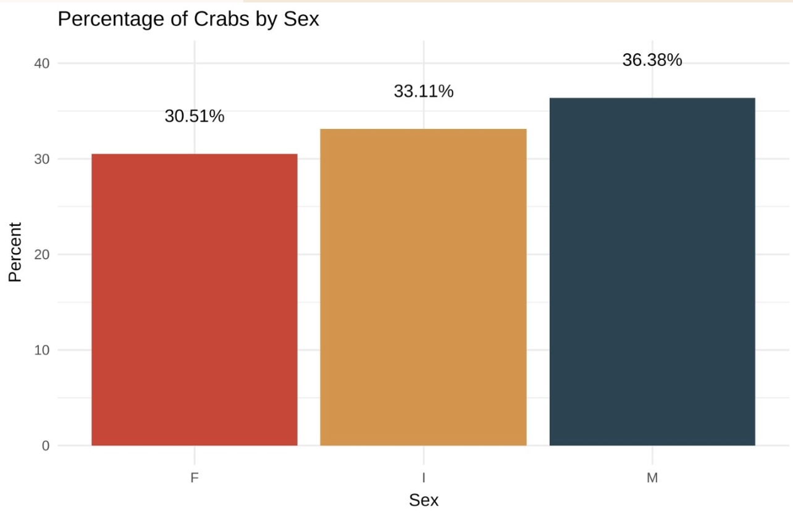
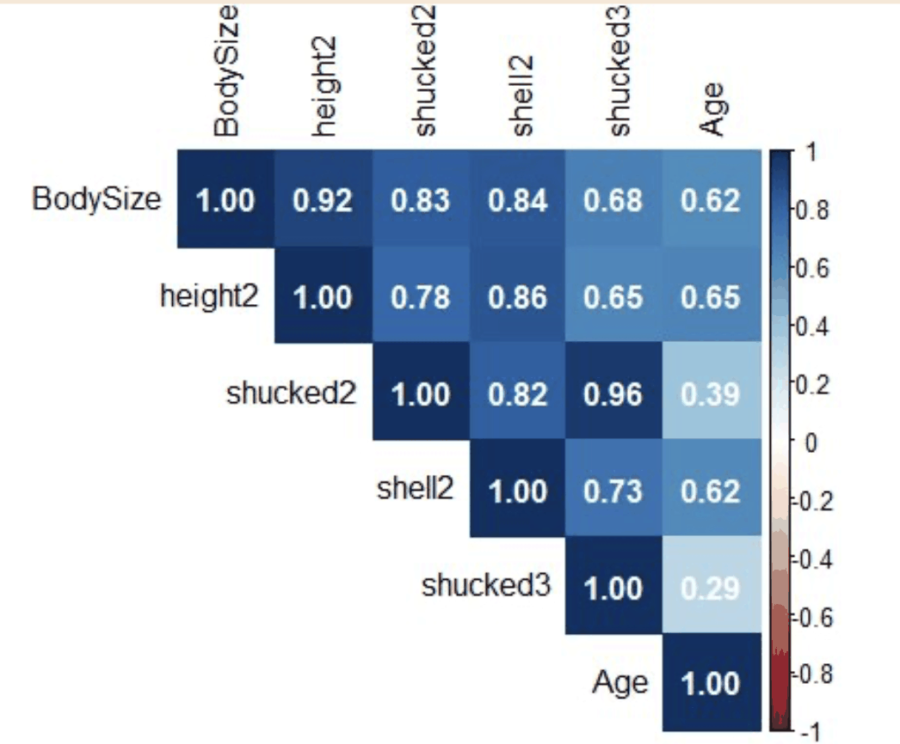

Crab Age Prediction
Predicting a crab's age in months from physical measurements alone, since the traditional method, counting growth rings on a cross-section of shell under a microscope, is slow and destroys the animal.
Can you skip counting shell rings?
Aging a crab the traditional way means cutting a cross-section of its shell and counting growth rings under a microscope, accurate, but slow and invasive. The question here was whether measurements you can take from the outside, like length, weight, and diameter, could predict age well enough to skip that step.
Physical measurements from a Kaggle competition dataset
Each crab has 8 recorded features: Sex, Length, Diameter, Height, Weight, Shucked Weight, Viscera Weight, and Shell Weight. The target is Age, measured in months.

The dataset is close to evenly split across the three sex categories.
Engineered features did more work than any single measurement
No individual measurement was a strong predictor on its own, so most of the modeling effort went into feature engineering: a constructed body-size measure, polynomial terms, and size-by-sex interactions, since a given length means something different for a male crab than for a female one.
A moderate, honest fit
The final model reached an R² of 0.702 and a mean absolute error of 1.14 months, meaning predictions land, on average, a little over a month off from a crab's true age.

No single measurement stood out: correlations with Age topped out around 0.65, which is why feature engineering mattered more than any one variable.
What the data actually showed
"Indeterminate" crabs skew younger
Crabs labeled Indeterminate had a median age of about 7 months, noticeably younger than the roughly 10 to 11 month median for Male and Female crabs, consistent with "Indeterminate" often marking crabs too young to have visibly differentiated.
Sex mattered less than size
Male and Female age distributions were close to each other. Body size measurements carried more of the predictive signal than sex alone did.

Age by sex: Female (median ~11 months), Male (~10 months), Indeterminate (~7 months).